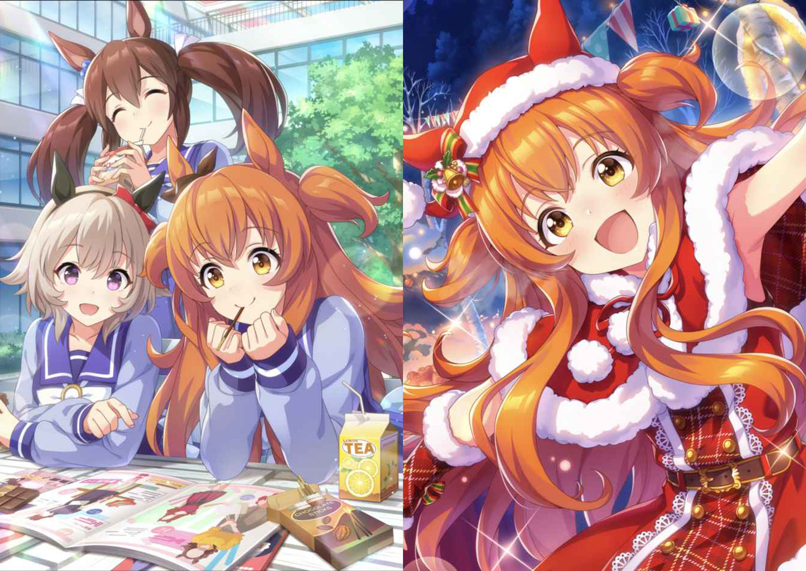

ウマ娘〜ファンブック~
卒業課題で作った私史上渾身の一作です。制作期間は約3ヶ月で、何度も修正に修正を重ねました。ページ数は48ページあります。
頑張ったシーン
楽曲紹介
それぞれの曲に私一押しのショットを1曲8枚計12曲96枚撮影して貼り付けました。これらの写真の解像度全て300dpiに変更しております。


推し紹介
完全に自分の欲を全て出したページですが、1キャラ6ページの合計18ページあります。特に力を入れたのは推しの一押しショットを収めたコーナーです。写真を全て自分で撮影し、配置もこだわった結果、計126枚の写真を配置しました。制作してる時重すぎて表示解像度下げないとまともに動けない状態でした。

